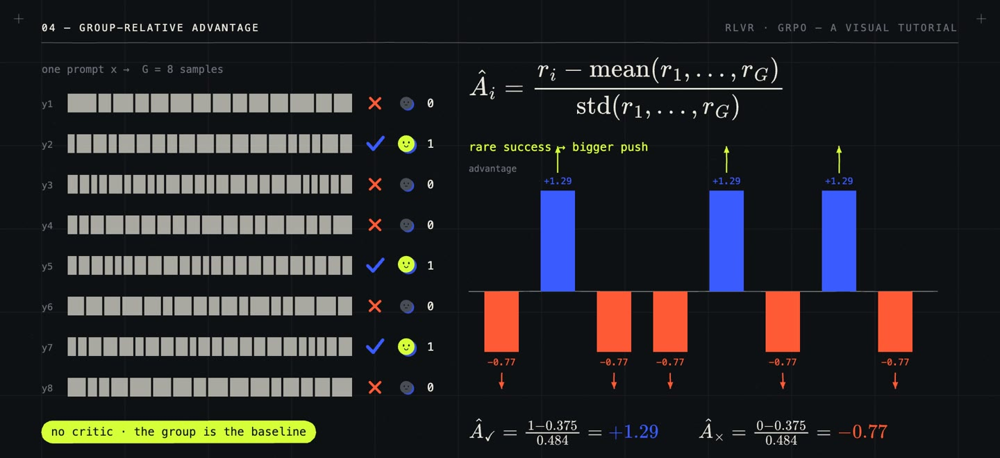

/ 6:53 VIDEO · 4 MIN READ
RLVR with GRPO:
sample, verify, reinforce.
Reasoning models brought together two ideas that had developed separately. Wei et al. showed in 2022 that written intermediate steps could improve mathematical and logical answers. Work on games had already demonstrated the value of spending computation before acting: Noam Brown's Libratus (2017) and Pluribus (2019) beat leading poker professionals using systems with substantial search components. The attraction was that more computation at decision time could improve performance without retraining a larger model for every decision.
Brown joined OpenAI in 2023. o1, released in September 2024, was trained with large-scale reinforcement learning to produce extended reasoning, and its reported accuracy improved with more test-time computation. Tülu 3 used the term reinforcement learning with verifiable rewards, RLVR, that November. In January 2025, DeepSeek-R1 showed that extended reasoning behavior could emerge through reinforcement learning, using Group Relative Policy Optimization, GRPO, introduced in DeepSeekMath a year earlier.
The enabling condition is a task whose result can be checked: a mathematical answer, a program tested against requirements, or another verifiable outcome. The training system need not write the reasoning in advance. It can generate attempts, identify successful ones, and make those attempts more likely. With o3 in April 2025, the attempt could also include web searches, code execution, and other tool calls. Verification remained the source of the reward; the route to the answer became a richer interaction with the environment.
The group supplies its own baseline
For a prompt \(x\), the policy \(\pi_\theta\) samples a completion \(y\), and a binary checker returns one for success and zero for failure. Proximal Policy Optimization (PPO) commonly uses a critic to estimate expected reward. GRPO replaces that learned baseline with a group of \(G\) completions sampled for the same prompt:
\[\hat A_i = \frac{r_i - \operatorname{mean}(r_1, \dots, r_G)}{\operatorname{std}(r_1, \dots, r_G)}.\]
The signal is relative to the other attempts. With three successes out of eight, the mean is 0.375 and the population standard deviation approximately 0.484. Successful completions get an advantage of +1.29; failures get −0.77.

If every completion gets the same reward, the centered signal is zero. Implementations need a convention, usually a stabilizing denominator, for that zero-variance case. A prompt the policy always solves or always fails provides no comparative signal in that batch. Prompts where both outcomes remain possible are especially useful for this form of training.
One outcome, many token updates
GRPO keeps a PPO-style clipped surrogate. For token \(y_{i,t}\), the ratio between its new and old probability is \(\rho_{i,t} = \pi_\theta(y_{i,t} \mid x, y_{i,\lt t}) / \pi_{\text{old}}(y_{i,t} \mid x, y_{i,\lt t})\). The objective is
\[J(\theta) = \frac{1}{G} \sum_{i=1}^{G} \frac{1}{|y_i|} \sum_{t} \min\Big(\rho_{i,t}\, \hat A_i,\; \operatorname{clip}(\rho_{i,t}, 1-\epsilon, 1+\epsilon)\, \hat A_i\Big),\]
often with a small KL penalty toward a reference policy. Clipping reduces the incentive for excessive changes on the sampled batch; it is not a hard guarantee that every probability stays within the clipping interval.
The same completion-level advantage is applied to every generated token. Useful steps and irrelevant or mistaken steps in a successful attempt receive the same broad reinforcement. The checker can identify a good outcome without identifying how each part of the trajectory contributed to it. For tool use, outputs from the tools stay in context but are masked out of the policy loss, because the model did not generate them.
Asynchronous generation introduces a second mismatch. If completions come from a sampler \(\mu\) that lags behind the current update policy, then \(\pi_\theta / \mu = (\pi_\theta / \pi_{\text{old}}) \cdot (\pi_{\text{old}} / \mu)\). AReaL truncates the second factor, accepting some bias to control variance. At scale, how data reaches the trainer becomes part of the learning algorithm.
Which choices are essential?
A reliable checker supplies the objective. Group-relative rewards remove the critic. The particular normalization is more negotiable: Dr. GRPO studies biases associated with dividing by completion length and by group standard deviation, while DAPO proposes further changes for large-scale training. These choices alter which attempts and which questions exert the most influence.
RLVR therefore buys a way to learn from outcomes we can verify, not a general measure of reasoning quality. It can reinforce a genuine procedure or a shortcut the checker accepts. Understanding the resulting model requires inspecting the computation and the evaluation boundary, as well as the score that improved.